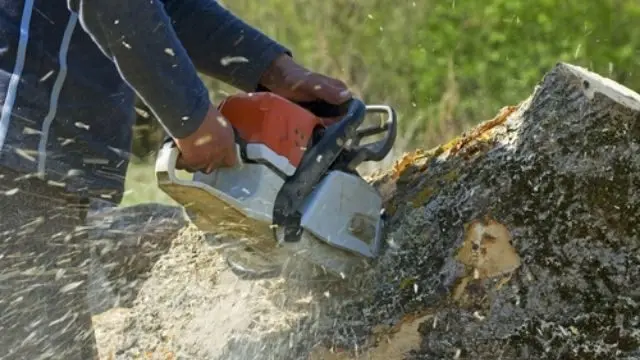

Pocatello Tree Service

Tree Stump Removal And Grinding In Pocatello Idaho
Leftover tree stumps are more than just an eyesore; they are structural hazards that can damage lawnmowers, harbor destructive wood-boring pests (like termites and carpenter ants), and invite unwanted fungal growth. At Pocatello Tree Service, we offer professional, efficient mobile stump grinding and complete stump removal services throughout Pocatello, Chubbuck, and surrounding Bannock County.
We utilize commercial-grade stump grinders that grind stumps down to 6 to 12 inches below the surface. This turns the stump into a pile of clean, organic wood mulch that you can reuse in your garden beds. Our experienced crew operates with care, ensuring that underground utilities, nearby sprinkler lines, and adjacent lawns remain fully protected during the grinding process.
We are fully licensed and insured, using the latest self-propelled machinery to access tight backyard spaces without rutting up your grass. After grinding, we can backfill the hole with soil, level the yard, and clean up all debris so your lawn is ready for fresh sod, seed, or landscaping.
Stump Grinding vs Stump Removal
Understanding the difference between stump grinding and complete stump removal helps you choose the best option for your property's future use:
- Stump Grinding (Highly Recommended): Our mechanical stump grinder cuts the wood down to shavings below ground level. The root system remains intact underground but decays naturally over time. Grinding is faster, less invasive, highly cost-effective, and leaves a flat surface ready for topsoil and grass seed.
- Complete Stump Removal: This process involves excavating the stump along with its entire root ball. It requires heavier equipment and leaves a larger hole that must be backfilled. This option is necessary if you plan to pour concrete foundations, install footings, or build structures directly over the former tree site after a tree removal.
Whether you are dealing with a leftover Pine stump or a large, dense Elm stump, Pocatello Tree Service will guide you to the right choice. We make sure the area is left clean and safe, protecting your yard's landscape value. To keep the rest of your canopy healthy, we also provide expert tree trimming and pruning services.
Contact Pocatello Tree Service now and get a free estimate!
How Low In The Ground Will We Grind When It Comes To Tree Stumps?
So, we’re basically going to be utilizing a tree stump grinding machine and these machines can grind about 18 inches below the ground. That’s somewhat within the industry standard. But the general rule is to grind until there’s no trunk anymore. It’s up to you, we are completely flexible to how you want it to be.
It would also depend on the tree species, some will have shorter trunks than the others and we’ll base our work on that.
Benefits Of Stump Grinding And Removal
There are a lot of benefits to the removal or grinding of these unwanted tree stumps. If not in the way or a safety hazard then tree stumps will have a lot of cool uses but removing them if they are will lead to a lot of good things.
- Safety
Tree stumps when not in a very strategic place are tripping hazards at the very least. This is especially true for kids and older adults. So make sure that everyone is safe then make sure to grind or remove that tree stump ASAP. Tree stumps can be a major inconvenience.
- Improve aesthetics
You will not only enhance the look of your place or commercial spaces but at the same time you’ve regained valuable space and this should allow you to use such space for something else more important than just have a stubborn tree stump sit there wasting away.
- Nasty pests
Tree stumps are most likely rotten or dead and they can be a breeding ground for diseases and at the same time, pests. They may look harmless but if the tree died due to an infection, to begin with and its stump was not removed then that can mean trouble for the surrounding area.
- Regrowth
Some tree stumps will be a major headache later on if not eventually removed. It can sprout and take hostage more space and it can spell more trouble for everyone. Plus, it will look ugly that’s for sure.
What Is The Average Cost Of Tree Stump Removal And Grinding Services?
Tree stump removal and grinding are a bit inexpensive compared to complete tree removal or trimming. You can be charged per diameter of the stump at around $2 to $3 per. But on average, tree stump removal may cost you around $350.
What Is The Fastest Way To Remove A Tree Stump?
The fastest way to remove a tree stump is to make use of all the techniques and tools that you have at your disposal. To grind a tree stump, we can make use of a machine to do it fast and easily. For removal, a heavy-equipment might be employed.
What Happens To Roots After Stump Grinding?
Naturally, the roots once the tree stump is ground will decay. But this takes time. Normally around 10 years before the roots of a tree completely withers. Remember, it should be done right to prevent any issues with the remnants of the tree.
Our pro-arborists should know what to do, so it’s important to call us for the job.
Questions & Answers
Stump removal involves physically excavating the entire root ball out of the ground, which leaves a large hole. Stump grinding uses a heavy-duty rotary wheel to pulverize the stump into wood chips 6 to 12 inches below the surface, which is less invasive and more cost-effective.
We typically grind stumps 6 to 12 inches below ground level. This depth is ideal for laying topsoil, seeding lawn, or installing new sod. If you plan to replant a new tree, we can grind deeper upon request.
Stump grinding produces a mixture of wood chips and soil. We backfill the hole with this mulch mixture to settle naturally. Any excess chips can be kept for landscaping mulch, or we can haul them away for you upon request.